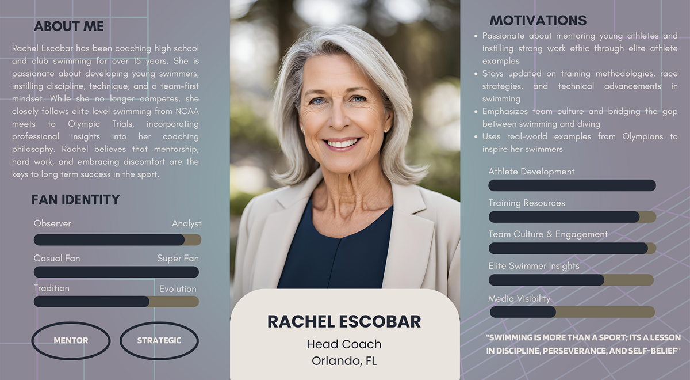
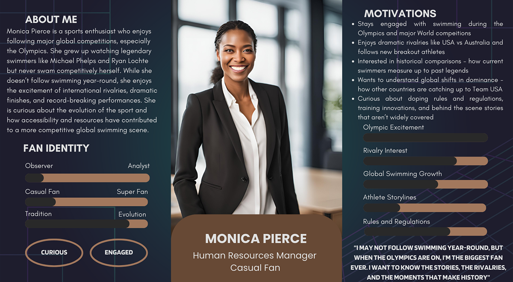
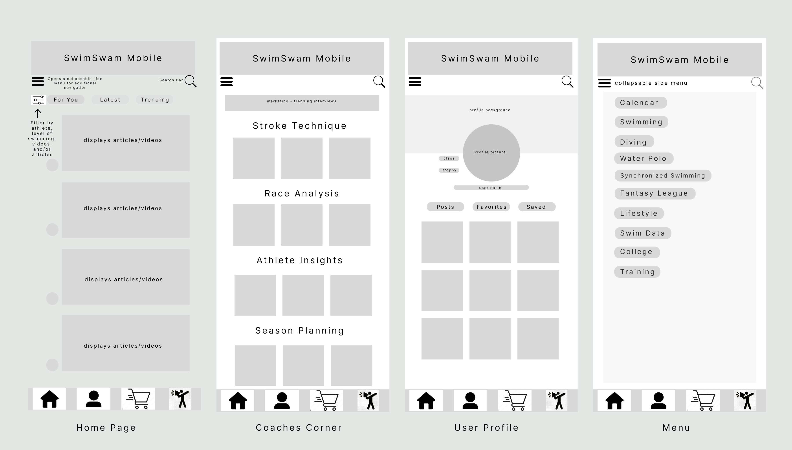
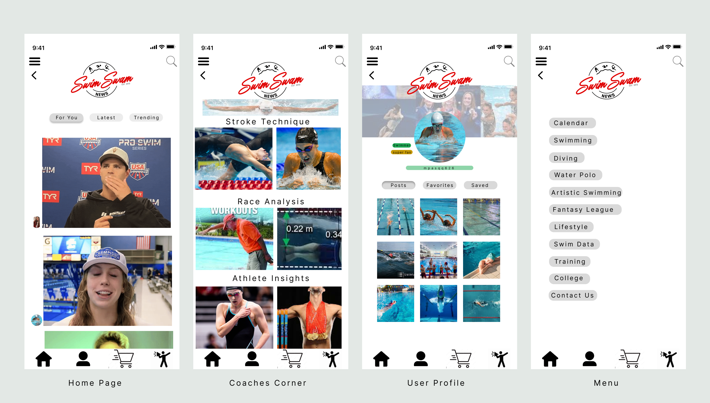

Project Overview
SwimSwam Mobile is a mobile-first UX/UI redesign of the popular swim news platform. This project explores how to deliver curated swim content, fantasy leagues, and athlete tracking in a cleaner, more intuitive mobile experience. Built in Figma, the prototype reflects user-centered design principles with a focus on accessibility, personalization, and ease of navigation.
- 🛠 Figma
- 🧠 UX Research
- 📐 Wireframing
- 🖱️ Interactive Prototyping
Interactive Prototype
Tip: Use full-screen view for the best interactive experience.
Design Process
👤 User Personas
To ensure SwimSwam Mobile met the needs of a wide range of users, I developed three distinct personas through user research and interviews. Each represents a unique voice in the swimming community—coaches, dedicated fans, and casual followers—and helped shape the app’s key features and priorities.
 Insights from these personas shaped core design decisions in the next phase, including the app’s layout, filtering system, and tailored features like race analytics for swammers and story-driven content for casual fans.
📐 Wireframes
After defining the core user needs, I translated those insights into low-fidelity wireframes. These frames establish the foundational structure of SwimSwam Mobile and visualize how users would navigate across key features.
The design emphasizes a persistent bottom navigation bar, intuitive content filters, and personalized content areas for each user type—from news feeds to coaching resources and athlete profiles.
🎨 Final UI Screens
After validating the layout and user flow through wireframes, I brought SwimSwam Mobile to life with high-fidelity UI design. The final prototype emphasizes clean visual hierarchy, interactive transitions, and mobile-first usability—all shaped by earlier user research.
The color palette, iconography, and typography were selected to create a sense of calm energy while maintaining clarity across screens. Below are four core screens from the final prototype.
Outcome
By applying user-centered design principles and peer feedback, the prototype provides a user-friendly, visually engaging platform. It could easily serve as a foundation for real development—and shows how thoughtful design can bring niche communities together through digital experiences.